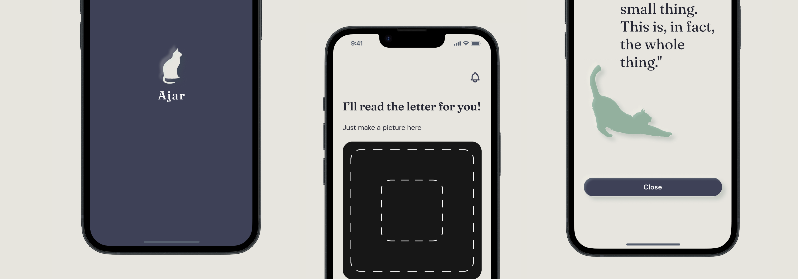
· End‑to‑End Product Design Case — von Research bis zum High‑Fidelity‑Prototyp ·
8. April – 28. Juli 2026
93 % der Menschen mit ADHS, die ich befragt habe, wissen genau, was ansteht — und schaffen es trotzdem nicht, mit der Aufgabe anzufangen. Viele haben im Job durch feste Termine und andere Menschen Struktur, scheitern aber privat allein an Papierkram und wiederkehrenden bürokratischen Aufgaben.
Ein Interview hat das Problem greifbar gemacht: Eine Person hatte einen Brief wochenlang nicht geöffnet, aus Angst vor dem, was darin stehen könnte — am Ende war die Frist verpasst und das Konto gesperrt.
Betroffene nennen das die „ADHS‑Steuer". Es ist aber keine Faulheit, sondern Handlungsparalyse durch Angst vor dem Unbekannten, verstärkt durch Zeitblindheit, bei der jede Aufgabe gleich dringend wirkt. Hinzu kommt ein medizinisch gut belegter Zusammenhang: Menschen mit ADHS haben häufig auch grundsätzliche Schwierigkeiten beim Lesen.
kennen die Aufgabe, können aber nicht anfangen.
Ich habe den Brief nicht geöffnet — es hat so lange gedauert, dass die Frist verpasst wurde und mein Konto geschlossen wurde.”
Entscheidung 1
Fokus auf Erwachsene mit ADHS, die im Job durch äußere Struktur (Deadlines, andere Menschen) gut funktionieren, aber privat ohne diese Struktur bei Alltagsaufgaben einfrieren. Der Schmerzpunkt war hier am größten, weil Scham und Leidensdruck hoch sind, aber kaum sichtbar.
Entscheidung 2
Erster Gedanke: eine App für beliebige wiederkehrende Alltagsaufgaben. Täglich wird eine Aufgabe zugelost oder gewählt — Briefe waren nur einer von mehreren möglichen Aufgabentypen, etwa einmal pro Woche. Kerngedanke schon hier: Externalisierung der Entscheidung — die App bestimmt, was heute zu tun ist, damit die Person nicht selbst entscheiden und priorisieren muss. Das Wichtigste war, die Aufgabe überhaupt anzufangen — den ersten Schritt zu machen. Aus dem Research weiß ich: Der erste Schritt ist für Menschen mit ADHS besonders schwierig — ist er aber einmal gemacht, wird die Aufgabe meistens auch durchgezogen.
Entscheidung 3
Der Nutzertest widerlegte die Annahme, dass Briefe „nur eine Aufgabe unter vielen" sind. Die Teilnehmer:innen zeigten: Briefe sind nicht die Nebensache — sie sind die zentrale Hürde, weil sie zu den langweiligen, bürokratischen Aufgaben gehören, die für Menschen mit ADHS besonders schwer zu bewältigen sind. Die Würfel‑/Zufallsaufgaben‑Mechanik wurde komplett gestrichen, das MVP auf Briefe fokussiert. Das Scannen wurde sofort zum Herzstück der App.
Entscheidung 4
Kein Streak‑System. Begründung: Streaks führen bei Verlust zu Frustration und wirken wie eine Strafe — für eine neurodivergente Zielgruppe, die sich ohnehin oft für ihr Scheitern schämt, das falsche Signal. Stattdessen: ein humorvoller, leicht trockener Kommentar der Begleitfigur Mia nach jeder erledigten Aufgabe — Dopamin‑Kick ohne Bestrafungslogik.
Entscheidung 5
Von manueller Bestätigung zu automatisiertem Eintrag im externen Kalender, basierend auf einer einmaligen Einstellung im Onboarding. Das senkt Reibung weiter, weil keine Rückfrage mehr nötig ist — ein Link markiert die Aufgabe gleichzeitig auch in der App als erledigt.
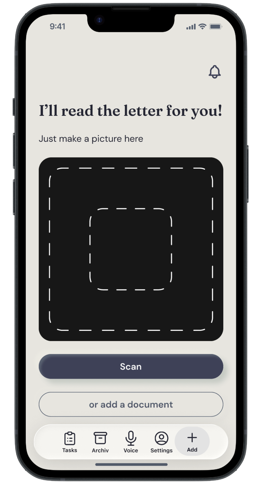
Nutzer:in fotografiert den Brief oder fügt eine PDF‑/JPG‑Datei ein, statt ihn selbst lesen und verstehen zu müssen. Sie:er macht nur den ersten Schritt — alles Weitere übernimmt die App.
Garantiert ist dabei, dass für heute keine weiteren Schritte mehr folgen — die App wird mithilfe der KI die Aufgaben entsprechend priorisieren. Das nimmt Menschen mit ADHS die Last, die sonst schon vor der nächsten Aufgabe entsteht.
Die App zeigt in einfachen Worten, was zu tun ist und bis wann. Zentrale Design‑Entscheidung: Nicht die Person muss den Brief einordnen und verstehen — die App übernimmt das.
Zur kognitiven Entlastung sind die Details zunächst versteckt — man muss nur wissen, was zu tun ist und bis wann. Auch die Zeitangabe zur Dauer der Aufgabe ist für die Zielgruppe sehr bedeutsam: Wer weiß, dass eine Aufgabe nur 3 Minuten dauert, empfindet weniger Druck, Last und Angst. Trotzdem sind alle Infos griffbereit — ein Klick zeigt alle Details, die aus dem Brief entnommen wurden, um die Aufgabe zu erledigen. Den Brief selbst muss man dafür wirklich nicht mehr lesen.
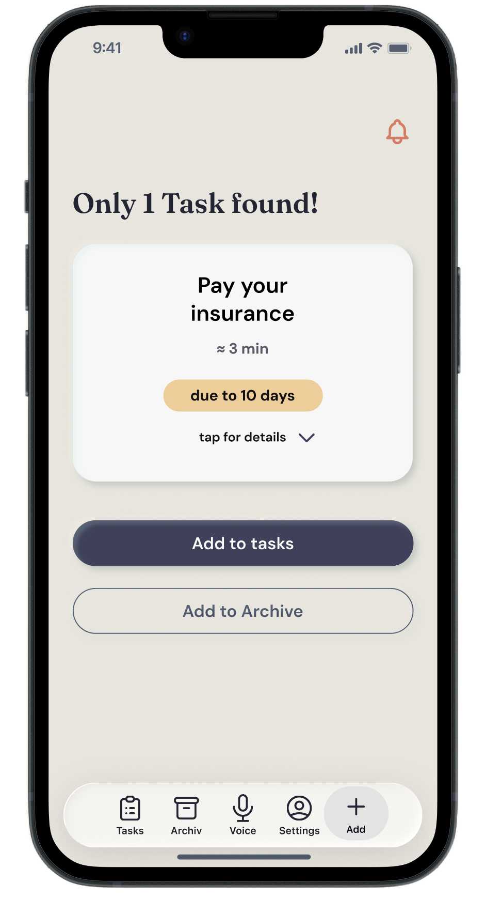
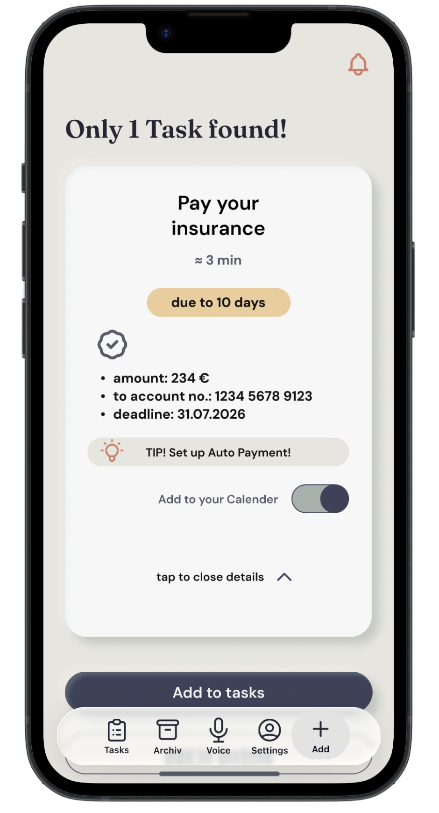
Die Aufgabe wird automatisch in den externen Kalender oder ein Task‑Management‑Tool exportiert, inklusive eines Links im Termin. Über diesen Link kann die Nutzer:in die Aufgabe direkt im externen Tool abschließen — und sie wird dadurch automatisch auch in Ajar als erledigt markiert. Nutzer:innen müssen nichts doppelt markieren.
Alle Dokumente, ob gescannt oder digital, werden zentral gespeichert und lassen sich mithilfe von KI durchsuchen, auch bei unsicherer Erinnerung. So hat man seine Unterlagen immer griffbereit — nichts geht verloren. Datenschutz ist von Anfang an mitgedacht: Die App ist auf EU‑Datenschutzrecht ausgelegt.
Aufgaben lassen sich direkt in der Liste per Swipe erledigen oder verschieben, ohne die Detailansicht öffnen zu müssen — für reibungslose Bedienung im Alltag.
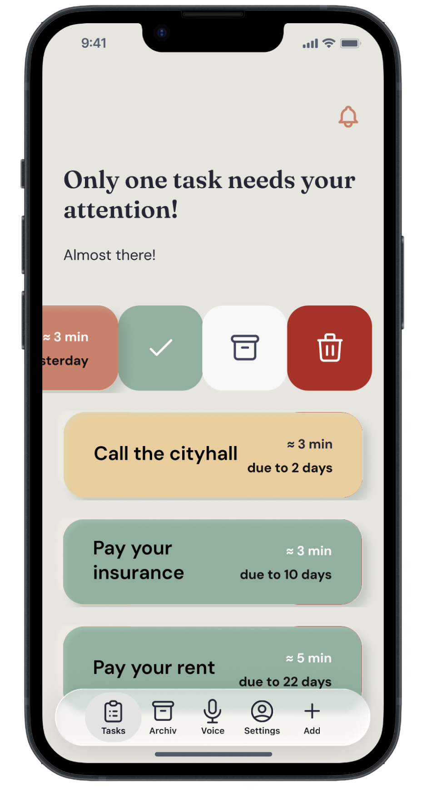
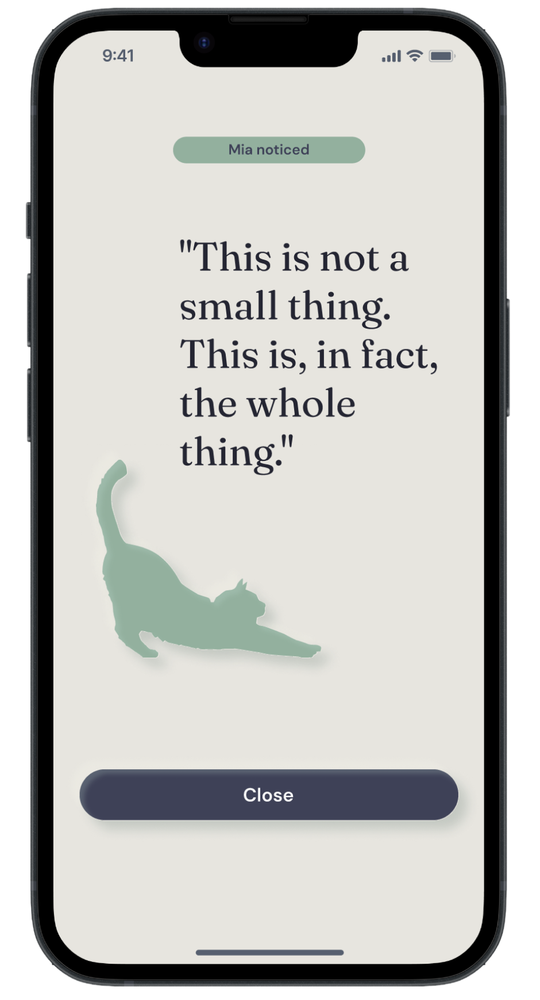
Kommentiert erledigte Aufgaben humorvoll‑trocken. Beobachtet, bewertet nicht. Sie ist immer da.
Kein übertriebenes Konfetti, kein Streak, der beim Scheitern noch bestraft.
Drei Testrunden insgesamt:
Onboarding → Alltagsaufgabe wählen (App entscheidet mit) → Brief‑Funktion nutzen.
Briefe öffnen war nur als eine Aufgabe unter vielen geplant — der Test zeigte, dass es die Hauptfunktion werden muss.
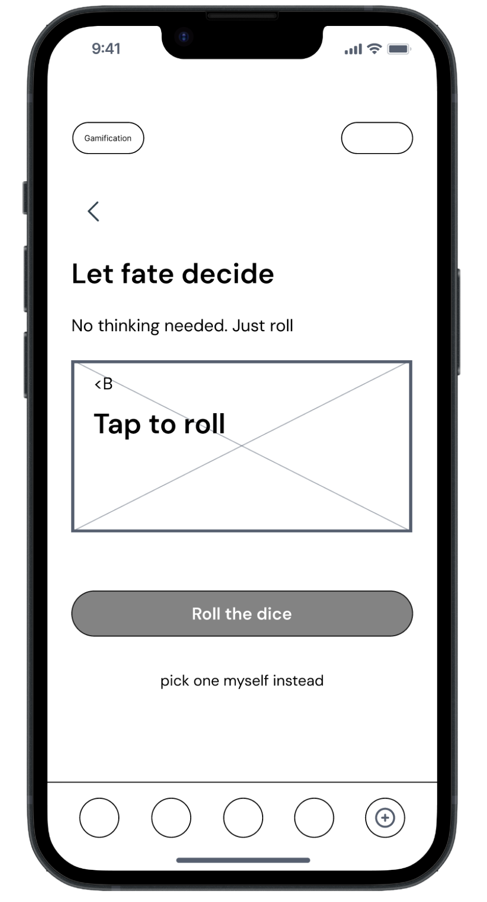
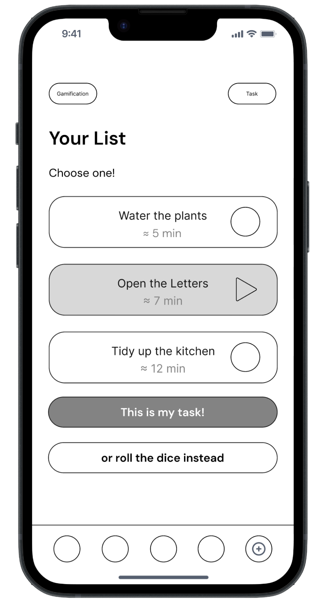
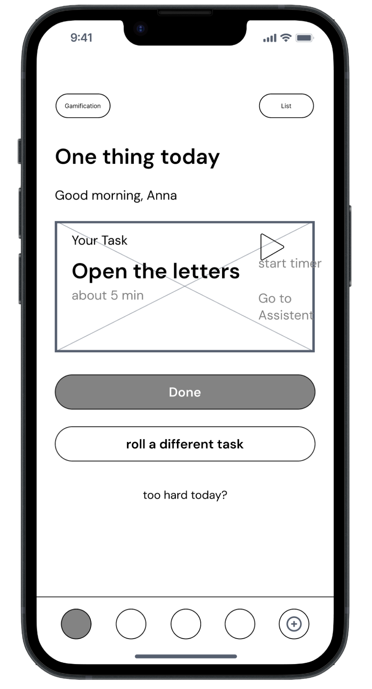
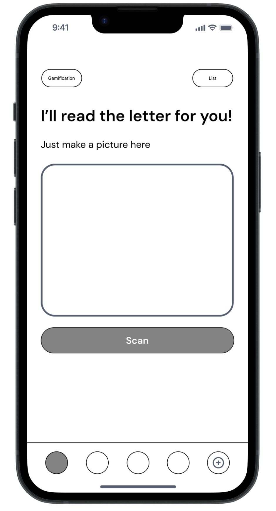
Onboarding‑Flow getestet.
Scan‑Funktion‑Flow getestet.
Hat gut funktioniert — das Scannen kam sofort an.
Getestet wurden Details wie:
Button „Details zeigen" wurde hervorgehoben.
Warum es wichtig istDetails der Aufgabe / des Dokuments sind auch für das künftige KI‑Training relevant – wie soll die KI Briefinhalte durchsuchen und Aufgaben priorisieren — nicht nur nach Frist, sondern auch nach Schwierigkeit oder Anzahl nötiger Schritte (z. B. „Behörde anrufen" + „Brief beantworten" dauert deutlich länger als nur eine Rechnung zu bezahlen).
Testpersonen fanden den Scan‑Flow beim ersten Versuch ohne Erklärung.
Das könnte ich echt gut gebrauchen!”
Ich habe ChatGPT und Claude genutzt, um aus meinen Interview‑Transkripten erste Themen‑Cluster zu identifizieren — das hat mir Vorarbeit bei der Auswertung gespart. Die finale Interpretation und die Persona‑Bildung habe ich selbst vorgenommen.
Für die Microcopy meiner Begleitfigur Mia habe ich mit Claude verschiedene Tonalitäten getestet, bevor ich mich für einen freundlich‑trockenen Ton entschieden habe. Mia begleitet die Person durch den Prozess und nimmt ihre Erfolge wahr — der Kommentar wirkt nicht wie eine Belohnung, sondern wie das wohlwollende Bemerken einer Begleiterin, die sieht, was geschafft wurde, ohne zu bewerten. So nimmt sie den bürokratischen Aufgaben etwas von ihrem Druck und ihrem amtlichen Ernst.
Auch bei der Aufbereitung meiner Zwischenpräsentation habe ich direkt mit Claude zusammengearbeitet — für Copy‑Anpassungen. Die visuellen Ergebnis‑Slides wurden nach dem Design System der App in HTML von Claude geschrieben und in mehreren Runden gemeinsam mit mir iteriert.
· Ich bin froh, dass ich schon sehr früh in der Wireframe‑Phase ins Testing gegangen bin — das hat mir geholfen, den MVP‑Fokus rechtzeitig einzugrenzen, statt erst spät zu merken, dass Briefe die zentrale Hürde sind und nicht nur eine Aufgabe unter vielen.
· Der bewusste Verzicht auf Streaks hat sich ausgezahlt: Für eine neurodivergente Zielgruppe ist positive, undramatische Bestätigung wichtiger als Gamification, die bei Rückschlägen bestraft.
· Aus Zeitgründen habe ich mich nur auf iOS‑Nutzer:innen fokussiert. Als Nächstes würde ich bei Android‑Nutzer:innen testen, ob die Swipe‑Funktion reibungslos funktioniert und ob ich zusätzlich einen Tap‑Fallback für Barrierefreiheit anbieten sollte.
Ein E‑Mail‑Agent zur automatischen Dokumenten‑Erkennung im Postfach und in anderen Apps.
Noch ein kleiner Zusatz — woher kommt der Name?
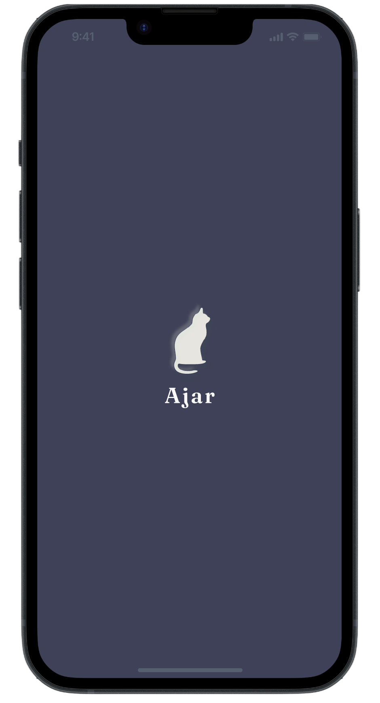
Ajar ist Englisch für eine Tür, die einen Spalt offen steht — nicht ganz zu, aber auch nicht weit geöffnet.
Das passt gut zur Kernidee: kein Druck, alles auf einmal zu erledigen (Tür weit auf), aber auch keine komplette Vermeidung (Tür zu) — nur ein kleiner erster Spalt, durch den man reinschauen kann.
Steht die Tür einen Spalt offen, sieht man, was dahinter wartet — und genau das nimmt der Angst vor dem Unbekannten ihre Kraft, dem zentralen Problem meiner Zielgruppe. Das spiegelt genau das „Mach nur den ersten Schritt"‑Prinzip.